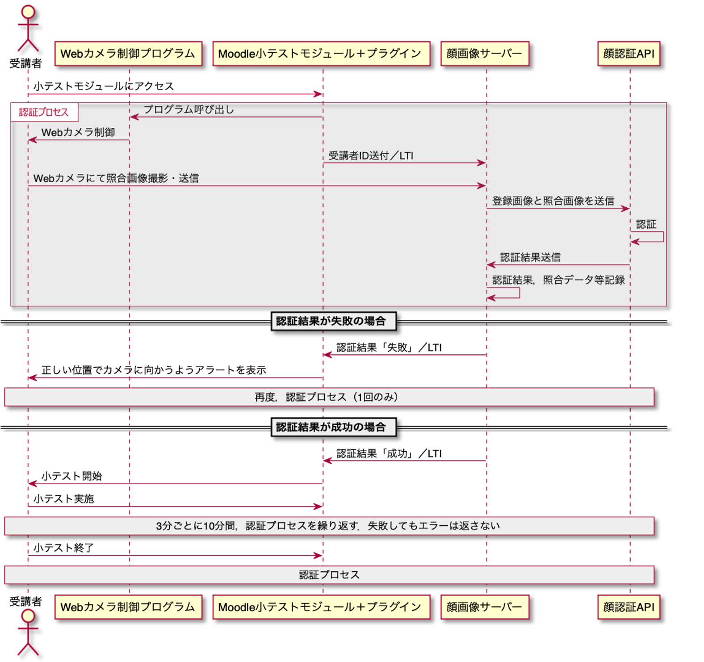

5. 顔認証
5.1. 概要
想定している顔認証システムは， Moodleプラグイン，Webカメラ制御プログラム，顔画像サーバーから構成される（図1）． 本開発の範囲は図1のうち顔画像サーバー部分とする．

図1：顔認証システム概要
修了試験は，Moodleの標準モジュールである小テストモジュールを利用する．
Moodleプラグインは，Moodle小テストモジュールに対するアクセスを制御する．
Webカメラの制御は， Web制御プログラムによりWebブラウザが行う．また，顔認証は，別途設置する顔画像サーバーにより提供する．
顔画像サーバーはMoodleプラグインから，教育ITの標準規格であるIMS LTI （以下，LTI）で呼び出され，外部の顔認証APIに画像の比較を依頼し，その結果を受け取ってLTIにて顔認証結果をMoodleに返す．
5.2. 顔認証システムの処理について
想定している顔認証システムの処理を図2に示す．
図2： 顔認証システムのプロセス
5.2.1. 顔画像サーバーの処理
本開発範囲である顔画像サーバーの処理は以下の通りである． 1. MoodleプラグインからLTIにより受講者ID等の学習者の属性情報を受け取る． 2. 登録画像がなければ，登録を求める． 3. Webカメラ制御プログラムからカメラ画像を照合画像として，受け取る． 4. 学習者のIDを手がかりにして顔画像データーベースから登録画像を取り出しカメラ画像と共に顔認証APIに送信し，顔認証の問い合わせを行う． 5. 顔認証APIの問合せ結果を，LTI経由で，Moodleプラグインに返す． 6. 認証結果を，受講者ID，講習ID，照合画像，タイムスタンプと共に顔データベースに記録する．
5.2.2. Moodleプラグインの処理
Moodleプラグインの処理を参考までに記載する． Moodleプラグインでは顔認証機能等を実装せず，小テストモジュールと顔画像サーバーの通信を以下のように媒介する．
Moodleの小テストモジュールにて，試験が開始されると，Moodleプラグインが呼び出される．
Moodleプラグインは，Webカメラ制御プログラムを呼び出し，カメラ画像の撮影を依頼する．その後，カメラ画像はWebカメラ制御プログラムが直接顔画像サーバーに渡すため，Moodleプラグインはカメラ画像の送受信に関与しない．
Moodleプラグインは，顔画像サーバーに対して，LTIプロトコルにて接続します．LTIの機能により，学習者がMoodleにログインしていると，受講者ID，講習IDなどの情報が顔画像サーバーに渡る．
顔画像サーバーが認証の可否をMoodleプラグインに伝える．
Moodleプラグインは，認証結果の成功を受け取ると，Moodle小テストモジュールに学習者のアクセス許可を与える．失敗した場合には，テスト開始時には，再度の認証を要求し．試験実施中は認証結果が失敗していても再認証は要求しない．
5.2.3. Webカメラ制御プログラムの処理
Webカメラの制御は，Webブラウザから行うこととし，開発ツールとしてWebRTCを利用する． 1. webカメラ制御プログラムは，Moodleプラグインからカメラ画像の撮影依頼を受け取る． 2. Webでカメラ撮影を実施する． 3. 撮影されたカメラ画像を顔画像サーバーに送信する．
5.2.4. エラー処理
以下のエラー処理を行うことを想定している．なお，この処理は，小テストモジュールが最初に認証を求めた時点（試験の開始時）でのみ行う．
顔認証に失敗し，試験が開始できないというエラーを返す．
正しい位置でカメラに向かうようアラートを表示する．
上記②のアラートを特定回数表示し，それでも認証されない場合は，顔画像の再登録申請をするか問い合わせるアラートを表示する
5.3. 検討事項
Webカメラ制御プログラムの開発を行わず，顔認証サーバーの開発がおこなえるのか
開発範囲として，エラー処理の配慮まで必要なのか
LTIプロトコル対応に開発工数は発生するのか